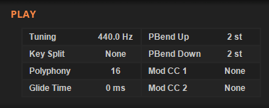

The Lower Panel¶
The sub-panel contains five separate pages accessed by the selection links at the bottom of the panel.
The pages available are:
MOD1 - modulation matrix slots 1 to 12.
MOD2 - modulation matrix slots 13 to 24.
OSC - additional oscillator parameters.
PLAY - global parameters affecting playback.
FX - the delay and reverb effects.
The MOD1, MOD2 and OSC pages are described in their own sections of this guide. The PLAY and FX pages are decribed below.
The PLAY Page¶
The PLAY page includes PLAY, ROUTING and MIDI LEARN.
PLAY¶
The PLAY section provides access to these settings:
Tuning - the master tuning for the synthesizer in Hz from 390 Hz to 490 Hz.
Key Split - the MIDI note at which the upper keyboard split begins from 0 to 127.
Polyphony - the maximum number of voices that can play at the same time. Set to 1 for monophonic playback.
Glide Time - the glide (portamento) time in ms from 0 to 2 sec. Only available in mono mode.
PBend Up/Down - the maximum range for the pitch-bend controller from 0 to 24 st.
MOD CC 1/2 - the MIDI CC message to be translated into the corresponding modulation source. See the Modulation Matrix section for more information.
Deducktion can operate in polyphonic or monophonic playback modes. In polyphonic mode each new keypress will result in an additional voice playing to give the desired polyphonic sound up to the maximum number of voices allowed. In monophonic mode a single voice is used to play all notes and each subsequent keypress will cause the voice to adopt each new note in turn. When a new key is pressed before the previous key has been released the voice will operate in ‘legato’ mode.
Legato mode influences both retrigger and glide behaviour when in mono playback mode. Glide between notes will only occur when notes overlap. Retriggering causes modulation envelopes and LFOs to reset when a new note is played and will only occur when notes don’t overlap.
Key split allows each oscillator to respond to a different section of the keyboard. Oscillator 1 responds to the lower part of the split while oscillator 2 responds to the upper part.
ROUTING¶
Deducktion has five different routing modes allowing the oscillators, filters and amps to be combined in different ways:
Modes 1, 2 and 4 combine the filters in serial and parallel arrangements but feed both oscillators into a single output. Modes 3 and 5 allow each oscillator to output through separate amps allowing each to act independently of the other.
MIDI LEARN¶
MIDI Learn allows external MIDI controllers to control the parameters presented by the user interface and consists of three parts:
Listen Switch - the switch to the left of the MIDI Learn title enables and disables ‘listening’.
Selected Control - the currently selected control.
Assigned CC - the CC value assigned to the selected control.
Deducktion responds to MIDI CC values from 0 to 119 and these can be assigned to most of the available controls.
On selecting a parameter control its name and current MIDI status will appear in the Selected Control display. If a CC controller has already been assigned its value will appear, otherwise the value will be ‘none’. If a selected control does not appear it means the parameter cannot be controlled externally.
To remove an assigned controller ctrl-click the Assigned CC display.
To assign a controller click the listen switch to activate ‘listening’ and click the parameter you wish to assign. Move the hardware control you wish to assign until the parameter begins to change and its CC value appears in the Assigned CC display. Click the listen switch again to deactivate listening.
Multiple controls can be selected while listening is active, simply click each one in turn and move the corresponding hardware controller for each.
Assigned CC controllers are saved on exit and will persist across sessions.
The FX Page¶
The FX page contains the DELAY and REVERB effects. These are included in serial at the end of the signal processing chain before the final output.
DELAY¶
Delay is a mono-delay with optional ‘ping-pong’ stereo output and tempo-sync.
The following controls are available:
Delay Mix - set the dry/wet balance of the output from all dry (0) to all wet (100%).
Delay Time - set the delay time from 10 ms to 6 sec or 1/32T to 1/1D according to the sync setting.
Tempo Sync - switch between frequency (off) and tempo-based timing (on).
Feedback - set the feedback level applied to the delay.
Filter Cutoff - set the filter cutoff frequency. The filter is applied to the delay returns before being mixed with the input signal.
Use LP - set the filter to lowpass. The default is a highpass filter.
Stereo Width - set the stereo separation for the ‘ping-pong’ output from -100% (L-R) to +100% (R-L).
Amp 1 Only - bypass the delay effect for amp 2 in routing modes that provide dual outputs.
REVERB¶
An efficient algorithmic reverb with pre-delay.
The following controls are provided:
Reverb Mix - set the dry/wet balance of the output from all dry (0) to all wet (100%).
Predelay - set the delay before the reverb return signals are heard from 0 to 1 sec or 1/32T to 1/4 according to the sync setting.
Tempo Sync - switch between frequency (off) and tempo-based timing (on) for the predelay time.
Room Size - set the size of the simulated reverb space from 0 (small) to 100% (large).
Damping - set the amount by which the reverberations are deadened from 0 to 100%.
Density - set the amount of reverberations generated from 0 (low) to 100% (high).
Stereo Width - set the width of the stereo space occupied by the reverberations from 0 (mono) to 100%.
Amp 1 Only - bypass the reverb effect for amp 2 in routing modes that provide dual outputs.